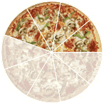
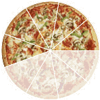

Comparing Fractions
Sometimes we need to compare two fractions to discover which is larger or smaller.
There are two main ways to compare fractions: using decimals, or using the same denominator.
The Decimal Method of Comparing Fractions
Convert each fraction to decimals, and then compare the decimals.
Example: which is bigger: 3 8 or 5 12 ?
Convert each fraction to a decimal.
We can use a calculator (3÷8 and 5÷12), or the method on Converting Fractions to Decimals.
Anyway, these are the answers I get:
3 8 = 0.375, and 5 12 = 0.4166...
So 5 12 is bigger.
The Same Denominator Method

The denominator is the bottom number in a fraction.
It shows how many equal parts the item is divided into
When two fractions have the same denominator they are easy to compare:
Example: 4 9 is less than 5 9 (because 4 is less than 5)
|  | is less than |  |
| 4 9 | 5 9 |
But when the denominators are not the same we need to make them the same (using Equivalent Fractions).
Example: Which is larger: 3 8 or 5 12 ?
Look at this:
- When we multiply 8 × 3 we get 24,
- and when we multiply 12 × 2 we also get 24,
so let's try that (important: what we do to the bottom we must also do to the top):
|
and |
|
||||||||||||||||||||||||||||||||||
We can now see that 9 24 is smaller than 10 24 (because 9 is smaller than 10).
| is less than | ||
| 3 8 | 5 12 |
Making the Denominators the Same
There are two main methods to make the denominator the same:
They both work, use which one you prefer!
Example: Which is larger: 5 6 or 11 15 ?
Using the Common Denominator method we multiply each fraction by the denominator of the other:
|
and |
|
||||||||||||||||||||||||||||||||||
We can see that 75 90 is the larger fraction (because 75 is more than 66)
| is more than | ||
| 5 6 | 11 15 |